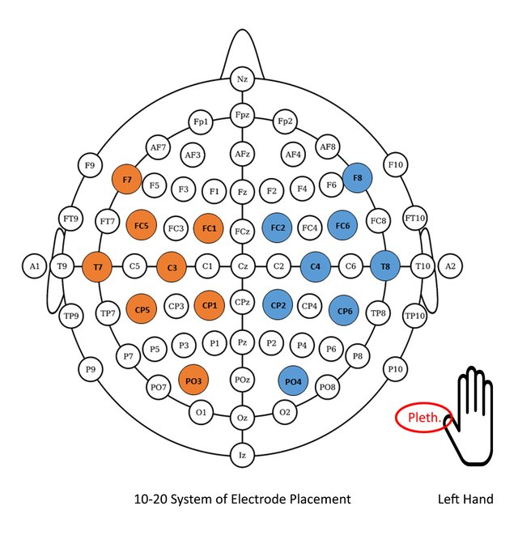
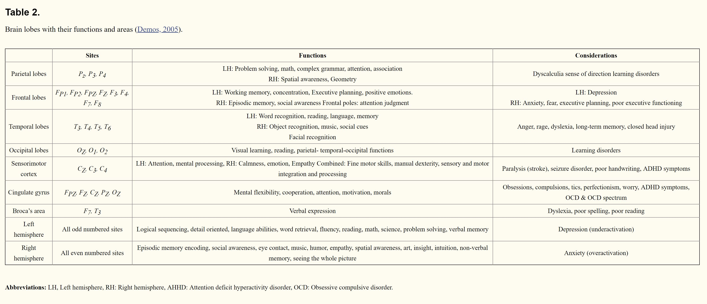

The mindfield product series explores concepts related to neurofeedback or brainwave biofeedback. Neurofeedback creates a subconscious reward system that teaches the brain to function in a more optimal range.
00
Overview
What is neurofeeback?
Neuorfeedback, or brainwave
biofeedback, focuses on training people to change the functioning of their brain by showing
them
the strength of different brainwave frequency bands, and encouraging them to systematically
make
some brainwave frequencies stronger and others weaker.
The brain produces tons of data. Within this electrostatic web of neurological activity is
our
personality,
hopes, dreams, fears, illusions, memories; an incoherent tangle of chemical
activity that
produces
reality.
This inquiry ponders the possibilities of
constructively affecting states of the human mind through a combination of sensory
immersion,
intelligent biofeedback and multi-modal interface technologies.
These products speculate about future interaction potentialities. It's strange to consider
that only
10
years ago we would find it unusual to have companies tracking biometric data or even having
'health
apps'. It's similarly weird to consider a connected brain as part of our everyday reality,
but the
mechanics behind the scenes are essentially the same, it's just that the context in which
the
technology
is able to be used has not yet found the appropriate capture models outside of very
controlled
settings.
What kinds of interactions and experiences would emerge?
What would those products and services look like? Do we want a future to include products
like
these?
How far is too far when harvesting data from people's lives?
01
Research
Understanding Brain Data
There are an estimated 100 billion neurons in the average 3-pound human brain. Connecting them are as many as 10 trillion synapses, the circuitlike chemical pathways that link neurons to one another.1 The interactions between these synapses occurs so often and rapidly that it produces an electrostatic energy field that can be analyzed by tuning into different frequencies with an electroencephalogram (EEG). Each frequency and the related "broadcast" can be linked to a number of cognitive states summarized as follows:
Placement of electrodes is standardized for advanced EEG:
Each corresponding region of the brain area also has implications:
02
Context
Applications: Cognitive States and Workload
The ability to continuously monitor levels of fatigue, attention, task engagement and mental workload could be useful when adverse behavior could cause emergencies. The continuous extraction of psycho-physiological markers of engagement and vigilance from ongoing brain activity allows the design of closed-loop systems, which provide feedback on cognitive, affective and attentional states. In other words: whenever brain-based workload or drowsiness levels, for example, exceed a specified threshold value (or engagement levels fall below a certain value), respondents can be notified to initiate counteraction.2
03
Intentions
How might we use this data?
Scenario 1: Performance enhancement under pressure
Lets say an athlete is trying to improve their attention with a
heartrate
over
140bpm and depleted oxygen
which
is necessary for their high altitude climb in a few months. Being at
high
altitudes is known to
have significant negative effects on cognitive functioning. While
connected
to
the
echoPath, when the athlete is training they can choose their music. When
their
attention
levels drop below a certain threshold the music becomes
distorted, the volume lowers and
begins to sound further away. As they learn to regain foocus and train
along
the
subconscious neural pathway, the music will start to play normally
without
distortion.
So,
while the device is being
worn during a workout the athlete can achieve performance enhancement
from
the
neurological
level.
Scenario 2: Improving attention
A more passive approach for a student trying to increase his ability to
concentrate in general over time, the software links to a game of choice
on
their phone.
When
the
gamer
becomes distracted, game play gets interfered with by a visual
distortion
until
concentration is
regained.
04
Sound
echoPath: a brain connected Arduino syntesizer
echoPath is an instrument that uses data from the user’s brain activity to actuate control variables on an Arduino built sound synthesizer. This product speculates on the possibility of at-home neurofeedback therapy using simple IOT controllers.
05
Early explorations
Building an Arduino Syntesizer
06
System Diagram
Muse Headband + NodeMCU + Arduino Uno
07
Connecting the brain
Muse Headband to NodeMCU
08
Proof of Concept
echoPath
09
Further Explorations
Neurosky Mindwave 2 Headband + Grasshopper
10
Speculative Circuits
Grasshopper and Scalp Circuitry
11
Wild Updates
Resources on the Advancement of Neurofeedback Technology
{kind=link}
{kind=link}
{kind=link}